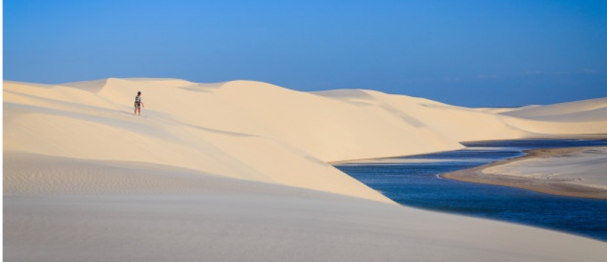
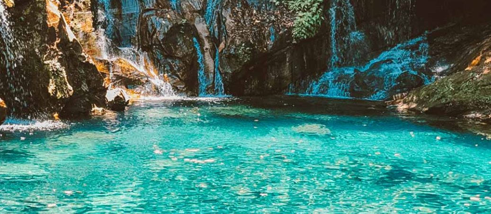

PARQUE NACIONAL DOS LENÇÓIS MARANHENSES

O Parque Nacional dos Lençóis Maranhenses é o destino perfeito para aqueles que buscam aventura e contemplação da natureza!!
Caminhar sobre as areias brancas do maior campo de dunas do Brasil, se refrescar em lagoas de água cristalina e observar o pôr-do-sol são experiências únicas que você levará para o resto da vida. Tudo isso com a emoção de um passeio fora de estrada em veículos 4x4 credenciados especialmente adaptados para percorrer o terreno arenoso e alagado da restinga dos Lençóis Maranhenses. Aqueles que preferem caminhadas longas e interação com comunidades tradicionais, odem ainda se aventurar a atravessar o campo de dunas e ter a experiência de pernoitar nos oásis do “deserto brasileiro”.
O Parque Nacional dos Lençóis Maranhenses, localizado no litoral oriental do estado do Maranhão, é o principal destino indutor do turismo no estado. Está inserido no Cerrado mas apresenta forte influência da Caatinga e da Amazônia, sendo encontradas espécies comuns destes 3 biomas. Em seus 155 mil hectares, abriga ecossistemas diversos e frágeis, como a restinga, o manguezal, e um campo de dunas que ocupa 2/3 da área total da unidade, sendo o principal atrativo do Parque Nacional devido as lagoas interdunares que se formam no período chuvoso da região.O parque está inserido em 3 municípios maranhenses, que dispõem de estrutura para recepção e condução de visitantes, Barreirinhas, Santo Amaro e Primeira Cruz.
COMO CHEGAR?
O litoral oriental do Maranhão possui duas estações características ao longo do ano. A chuvosa, de fevereiro a maio, e a seca, de junho a janeiro. Após a estação chuvosa o Parque Nacional dos Lençóis Maranhenses apresenta seu mais belo cenário, pois as lagoas interdunares estão cheias. Conforme o período seco avança as lagoas secam pouco a pouco, chegando em novembro com o nível bem baixo. Mas é bom deixar claro, isso tudo depende do regime de chuva do ano, portanto, é sempre bom buscar informações com a administração do Parque Nacional ou com o receptivo local.
POÇO AZUL

Para se refrescar nas águas cristalinas do Poço Azul não é necessário contratar serviço de guia. Basta pagar uma taxa de entrada de R$ 40. O poço é formado por uma das 400 nascentes da região. A pouco metros, é possível avistar a Cachoeira de Santa Bárbara, de 76 metros de queda. Próximo do Poço, também é possível chegar ao Encanto Azul, outra nascente que forma mais um belíssimo poço de águas cristalinas. Basta seguir uma trilha de 6km. Depois de se refrescar, aproveite para almoçar em um dos restaurantes do entorno. Alguns dos pratos típicos são tucunaré ou tambaqui fritos.
COMO CHEGAR?
O Poço Azul fica na cidade de Riachão, a 135 quilômetros de Carolina. A viagem é feita pela BR-230, que é asfaltada e muito bem cuidada. Há ainda um trecho de 38 quilômetros em estrada de chão, mas não se preocupe, porque a manutenção nela é feita constantemente e isso ajuda para que veículos de passeio cheguem tranquilamente.
EVENTOS
Saia Rodada
2 de outubro
Saia Rodada
2 de outubro
Saia Rodada
2 de outubro